2-词法分析
词法分析
词法分析（Lexical analysis 或 Tokenization）
输入：源代码，可以理解为一个字符串
输出：将这个字符串切割得到子串，每个子串称为 \(token\)
其中涉及到的步骤有：
去掉注释
识别字符并且对应到定义好的分类
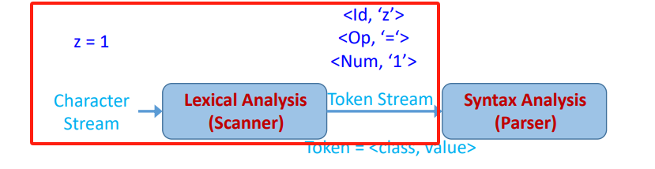
token
token 是语言中的单词，每个token都有一个类别。
而每一个 token class 则对应着一个字符串集合：比如Number，Keyword，Whitespace，Identifier等
token 就是一个二元组
(class,lexeme)词素（Lexeme） 是 token class 的实例，比如上图中的 ‘z’，‘=’，‘1’
因此我们词法分析的内容就是分类，识别得到一个 token 流
但是假设从左往右扫描，我们没办法一下子知道怎么分类或者切割更合适。比如
=和==，因此我们不得不需要一定的 look ahead （往前多看）。
正则表达式（Regular Expression）
为了解决问题，我们使用正则表达式，是一种简单但是强大的方法。
需要引进一些定义
字母表\(\Sigma\) ：一些符号的有限集合。比如
{0,1}，{a,b,c}串（String） ：使用字母表的符号组成的一个有限长度的串，比如
aab，注意有一个特殊的空串（没有使用任何字母）写为 \(\varepsilon\)语言（Language）：串的集合。比如
{01,10}。注意两个特别的语言：
\(\{\varepsilon\}\) 代表集合中有一个元素（串），这个串为空串。
\(\phi\) 代表空集合，即集合中没有一个元素。
语言的运算
并集（Union）
连接（Concatenation） ：两个语言（串的集合）中的串拼接类似于笛卡尔积，
比如
A={a,bc}，B={df,g}，那么AB={adf,ag,bcdf,bcg}闭包（Kleene closure） ：\(L^*\) 将 \(L\) 拼接 0 次或者多次 其中 \(L^0=\{\varepsilon\}\) ，\(L^i=L^{i-1}L\)
正闭包：\(L^+\) 即 \(L^*-L^0\)
正则表达式：一种用来描述全部靠应用运算符在字母表得来的语言
可以用来表示如重复等
能够用正则表达式表达的语言叫做正则语言
怎么理解正则表达式和语言？
正则表达式可以理解为是一种表达的方式，语言是字符串的集合
而正则表达式就是为了表达这个集合（语言）
原子表达式（Atomic REs）
原子表达式是不能再被分割的正则表达式
\(\varepsilon\) 代表空串集合，即
{""}单个字母代表这个字母的集合，如
'c'={"c"}\(\phi\) 代表空集合，和 \(\varepsilon\) 不一样
组合表达式（Compound REs）
使用原子表达式组合起来得到的正则表达式
正则表达式 \(r\) ，它代表的语言 \(L(r)\) ，简洁表示 \((r)\)
\((r)|(s)\) 代表并集 \(L(r) \cup L(s)\)
\((r)(s)\) 代表连接操作 \(L(r)L(s)\)
\((r)^*\) 代表闭包操作 \((L(r))^*\)
在后面我们会删除这个括号，更加简洁。比如 \(a|b^*c\)
这样的话，我们的正则表达式本来是为了表达这个语言（字符串的集合） ，现在甚至可以理解成正则表达式就是代表一个字符串的集合
运算符的优先级
由上到下优先级递减
（A）
A*
AB
A | B
常用的正则表达式表达
\(A+ \equiv AA^*\)
\(A?\equiv A|\varepsilon\)
\([a_1a_2...a_n]\equiv a_1|a_2|...|a_n\)
\([a-z]\equiv \ 'a'+'b'+'c'+...+'z'\) 这里代表一个字符串集合，里面有 a 到 z
[^a-z] 表示除了 a-z 以外的所有字符
至此，我们可以编写每个token下语素对应的正则表达式。比如：
Keyword：
RE='if'|'else'|'then'|...Numbers：
digit=0|1|2|3|4|5|6|7|8|9integer=digit digit*Identifier：
letter=a|b|c|...RE=letter(letter|digit)*
使用正则表达式完成词法分析
为每个 token class 编写对应好的语素正则表达式
创建一个正则表达式 \(R\)，用来匹配所有的语素即 \(R=numbers+keywords+...\)
检测输入中前面的字符，看看是否能匹配上
假设匹配上了某一个表达式，那么去除前面的字符（得到一个 token ），继续匹配
假设前面既可以有 n 个字符匹配得到其中一个表达式，同时又有 m 个字符匹配上另一个表达式，怎么选取？
最长匹配规则
同样的前缀匹配上了多个，怎么选，比如 if 既可以是关键字也可以是 identifier？
优先级规则，比如这里优先匹配关键字
没有规则匹配中，怎么办？
报错！
至此，我们完成了如何用正则表达式来指定每个 token 的定义
但是，我们还需要利用有穷自动机来完成一个 token 识别器
词法分析器的实现
任务：预定义好的 RE（正则表达式）=> FA（有穷自动机，finite automata）
方法：
使用现成的工具：Lex（C），Flex（C++），Jlex（Java）。编程人员只需要指定正则表达式来指定 token，工具就会帮我们生成对应的代码来转换得到
自己编写，更自由却更难！
因此，正则表达式是定义，自动机是实现。
我们将会用自动机来判断一个输入字符串将会被我们接受还是拒绝。
这个自动机所代表的语言和我们规定的正则表达式所代表的语言是一致的。
状态图（用来表示自动机，方便我们查看）组成
输入的字母表 \(\Sigma\)
状态集合 \(S\)
开始状态 \(n\in S\)
接收状态 \(F\subset S\)
状态转移 \(\delta：S_a \rightarrow S_b\)
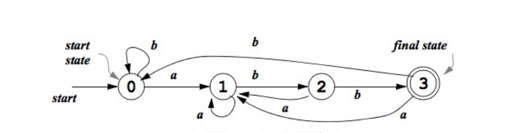
我们也将自动机分为两种：
确定性有穷自动机（DFA，Deterministic Finite Automata）
每个输入每个状态只有一个转移
没有空转移 （\(\varepsilon\) 转移）
在图中只有一条确定的路径
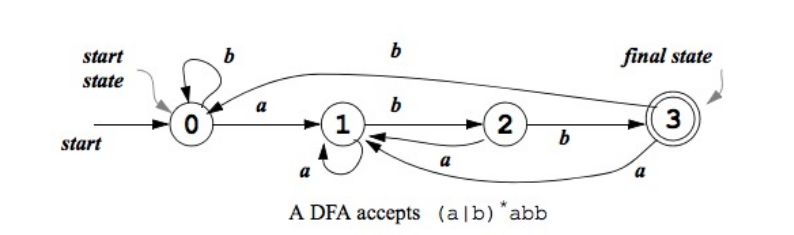
非确定性有穷自动机（NFA，Nondeterministic Finite Automata）
对于确定的输入和状态会有多个状态转移
可能有 \(\varepsilon\) 转移
可以选择其中之一的转移路径
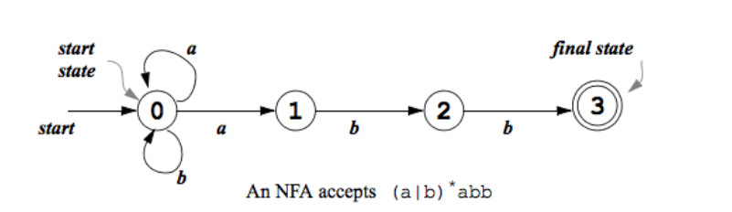
整个的转移过程
正则表达式RE （-> NFA） -> DFA -> 表格驱动的自动机
表驱动的优劣
优点：自动驱动
缺点：内存消耗大，特别是很多状态不需要用上（没有状态转移）也需要存储
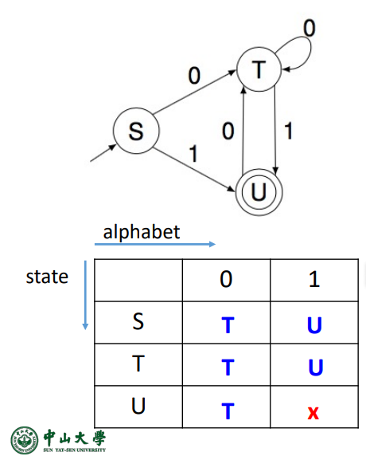
RE -> NFA
NFA可以有 \(\varepsilon\) 转移（空状态转移），即不需要读取任何输入就转移到下一个状态
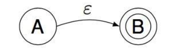
使用 MYT算法 将 RE 转移成 NFA
输入：从字母表得到的RE
输出：NFA，可以接受RE对应的语言
MYT 算法
得到原子 RE（i 代表开始状态（initial），f 代表接受状态（final））
空转移
单字符转移
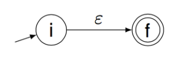
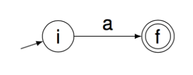
得到组合表达式
R1 | R2
R1 R2
R1*
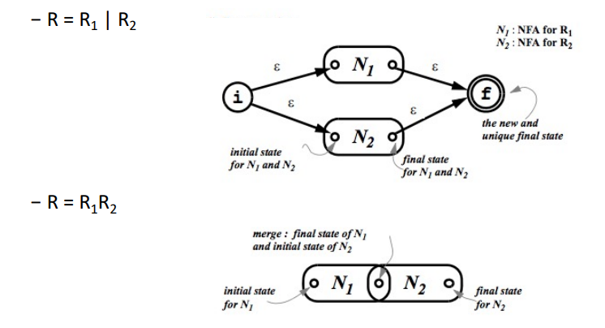
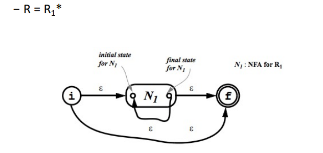
NFA -> DFA
为了证明 NFA 和 DFA 等价，需要证明由 DFA 转换得到的 NFA 将会接受相同的语言，反过来也一样。
子集构建
对于某个输入序列，DFA只有一个状态，NFA 可以走到很多个状态，因此一个 DFA 状态对应着多个 NFA 状态。DFA 中的一个状态的对应的多个 NFA 状态之间可以用 \(\varepsilon\) 转移。我们就是用空转移来不断新增状态直至不能继续操作。
算法流程
提前定义好几个概念
\(\varepsilon -closure(s)\) ：代表状态 s 的空闭包，是一个集合，里面有所有可以由 NFA 的状态 s 只进行空转移可以到达的全部状态
\(\varepsilon -closure(T)\)：所有 T 集合里面的状态 s 的 \(\varepsilon -closure(s)\) 的并集
\(move(T,a)\)：在 NFA 中集合 T 的所有状态 s 接收到 a 动作将会到达的状态集合
初始化 \(Dstates\) 代表 DFA 的状态集合，刚开始只有初始状态的空闭包 \(\varepsilon -closure(s_0)\)，并且它未被标记
开始循环，循环条件是 \(Dstates\) 还有未被标记的集合 \(T\)
标记 \(T\)
开始循环，遍历所有的输入 \(a\)
\(U:= \varepsilon -closure(move(T,a))\) 即由当前的集合 \(T\) 接收到动作 \(a\) 后得到的空闭包
如果 \(U\) 不在 \(Dstates\) 则把他加入，不标记
\(Dtran[T,a]:=U\) 状态转移添加
终止状态是那些至少包含一个 NFA 终止状态的 DFA 状态
但是目前 DFA 还不是最小的
最小化
任一 DFA 可以被转换成它的最小状态等价 DFA
需要发现等价的状态
将他们用一个状态表示
两个状态等价
- 对于任一输入 \(a\) ，它们都会转移到等价的状态
最小化算法
将 DFA 状态进行不停的分组直至无法进行
那么每一个组都会被作为一个单独的状态
初始化状态分组
所有的终止态 \(\{F\}\)
所有的非终止状态 \(\{S-F\}\)
循环直到不能改变为止
- 如果有同一组的状态相同的输入转移到了不同的状态组，那么必须分割
最后每一组都是单独一个 DFA 状态
NFA -> DFA 复杂度
空间复杂度
NFA可以有无穷多状态
假设 NFA 的状态数是 N ，那么 DFA 状态数量空间复杂度是 \(O(2^N)\)
真实场景下，两者数量相近
时间复杂度
对于一个字符串的处理
DFA 是 \(O(|X|)\)
NFA 是 \(O(|X|N^2)\)
实际实现
更多都会选择使用 DFA 作为词法解析，空间换时间
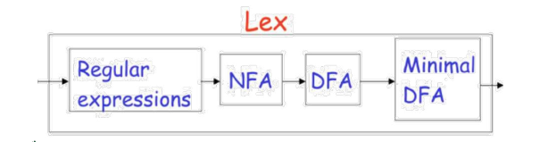
如何匹配关键字
使用正则表达式来匹配，注意优先级，会导致状态机臃肿
使用同一个正则表达式来匹配关键字和标识符，但是使用特殊关键字表区分。更精简但是需要额外一个表